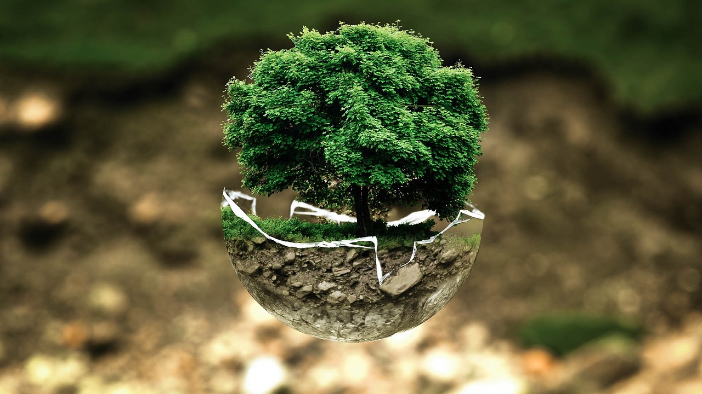
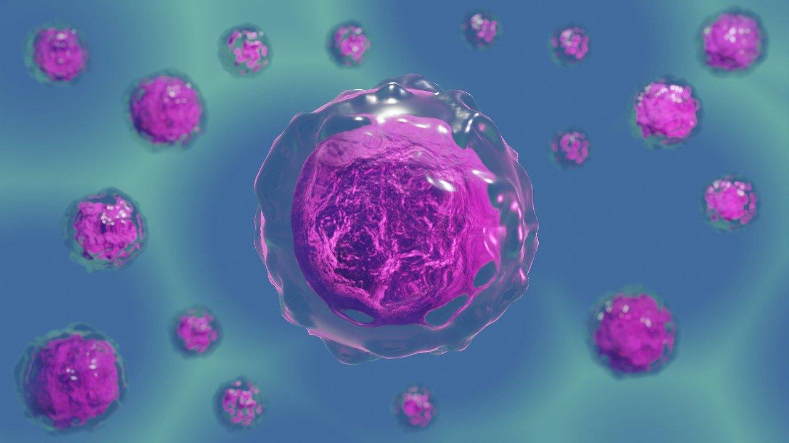
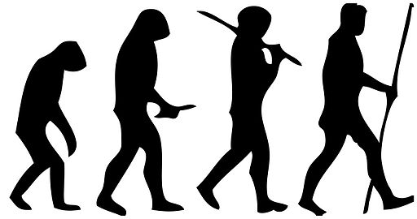

| La biologia es la ciencia natural que estudia todo lo relacionado con la vida y lo orgánico. Es la ciencia que trata de seres vivos considerando su estructura, funcionamiento, evolución, distribución y relaciones. La biología (cuyo nombre proviene del griego: bíos, “vida” y logía, “ciencia, saber”) es una de las ciencias naturales, y su objeto de estudio comprende a las distintas formas y dinámicas de la vida: el origen, la evolución, la adaptación y los procesos propios de los seres vivientes: la nutrición, el metabolismo, el crecimiento, la respuesta a estímulos, la reproducción, y sus diversos mecanismos posibles de existencia. La biología propone el estudio empírico y ceñido al método científico de los fundamentos de la vida, queriendo encontrar las normas que la regulan y los procesos que determinan sus dinámicas. |
| Tipos de Biologia | Definición | Imágen |
|---|---|---|
| |
La biologia ambiental estudia la relación de los sistemas biólogicos. Esta disciplina analiza cómo los seres vivos se adaptan y responden a los cambios ambientales. Asi mismo, estudia cómo los organismos interactúan entre sí y con su entorno, incluyendo las cadenas alimentarias, las interacciones mutualistas y la competencia por los recursos. |
 |
| |
Es una disciplina que se encarga del estudio de las células, desde cómo están estructuradas hasta su funcionamiento bioquímico. Es una rama de la biología y al ser las células las unidades básicas de la vida, su estudio es esencial para el conocer funcionamiento de todos los seres vivos. Dentro de las células ocurren una serie de procesos vitales como el metabolismo, doblamiento de proteínas, comunicación extracelular, secreción de sustancias, excreción de componentes que ya no son útiles, asimilación de sustancias en crecimiento y división celular. |
 |
| |
La biología evolutiva es la rama de la biología que estudia el origen y los cambios de los seres vivos a través del tiempo, los procesos evolutivos que produjeron la diversidad en la Tierra y las relaciones de parentesco entre las especies. Entre esos procesos evolutivos destacan la selección natural, la descendencia común y la especiación. Nos permite enriquecer nuestra comprensión de los fenómenos biológicos y patológicos que podrían conducirnos a mejorar nuestra vida diaria. |
 |